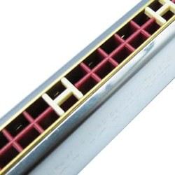

A mouth organ is a generic term for free reed aerophone with one or more air chambers fitted with a free reed.Though it spans many traditions, it is played universally the same way by the musician placing their lips over a chamber or holes in the instrument, and blowing or sucking air to create a sound. Many of the chambers can be played together or each individually.

The mouth organ can be found all around the world and is known by many different
names and seen in many different traditions. The most notable variations include
the harmonica, the pan flute, and Asian free reed wind instruments consisting of
a number of bamboo pipes of varying lengths fixed into a wind chest; these
include the sheng, khaen, lusheng, yu, Shō, and saenghwang. The melodica,
consisting of a single tube that is essentially blown through a keyboard, is
another variation.